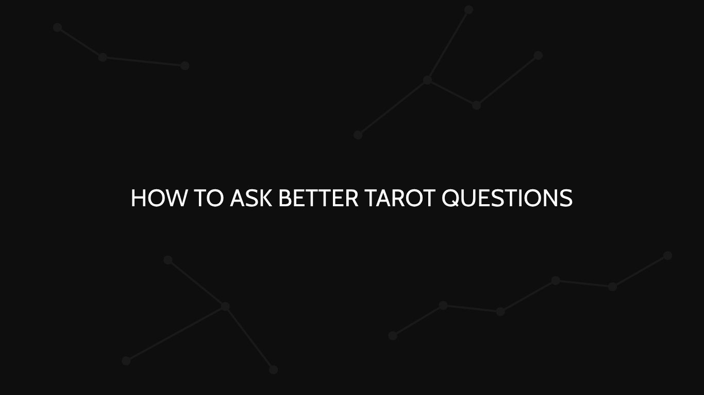

How to Ask Better Tarot Questions
Every reading begins with a question. Here is how to give that question a clearer direction — without asking the cards to decide for you.

Every tarot reading begins with a question. But not every question creates the same opportunity for reflection.
Sometimes, you know exactly what you want to ask. Other times, you have a feeling, a situation, or a concern that is difficult to put into words.
At T'NOIR TAROT, we believe that a thoughtful question gives a reading a clearer direction. It helps focus the interpretation and creates more room to explore the situation from a different perspective. Here is how to approach your next tarot question.
01 — Start with what you want to understand
Before writing your question, take a moment to identify what is actually on your mind. Are you looking for clarity about a relationship? Are you facing a difficult decision? Or are you trying to understand a situation that has left you uncertain?
You don't need to know the answer before you begin. You only need to identify what you want to explore.
For example, instead of asking, "What's going on in my life?", try asking: "What should I understand about the situation I am currently facing?"
A clearer starting point gives the reading a more defined subject to explore.
02 — Keep your question focused
One question should focus on one main concern. Combining several unrelated questions into a single reading can make the interpretation difficult to follow.
Consider the difference. "Will I get the job, will I be happy there, and will my financial situation improve?" contains several different concerns. A more focused approach would be: "What should I consider about this career opportunity?"
You can always explore other aspects of the situation through additional questions. The goal is not to limit your curiosity. It is to give each question the attention it deserves.
03 — Open questions vs. yes-or-no questions
Yes-or-no questions are common, especially when you are uncertain about an outcome. However, a simple yes or no may leave little room to explore the context, possible challenges, or choices involved. An open-ended question invites a broader interpretation.
Career. Instead of "Will I get the job?", try: "What should I understand about this career opportunity?"
Relationships. Instead of "Will they come back?", try: "What should I understand about this connection right now?"
Personal decisions. Instead of "Should I make this decision?", try: "What should I consider before making this decision?"
The purpose is not to guarantee a better answer. It is to create space for a more thoughtful interpretation.
04 — Focus on your perspective and choices
Some questions focus entirely on what another person might think, feel, or do. But another person's private thoughts and future actions cannot be established as facts through a tarot reading.
Instead, consider what you can understand about your own experience of the situation. Instead of "Does this person secretly love me?", try: "What should I understand about my experience of this connection?" Instead of "Will my friend apologize?", try: "How can I approach this situation while respecting my own boundaries?"
This shift brings the focus back to your perspective, your choices, and what you can influence. A reading should support your own reflection — not replace your judgment.
05 — Examples by category
Not sure what to ask? Here are some questions you can use as a starting point.
Love & relationships
What should I understand about this connection? What pattern should I pay attention to in my relationships? How can I approach this situation with greater clarity? What should I consider about my expectations in this relationship?
Career & opportunities
What should I consider about this career opportunity? What may be holding me back from making progress? What should I focus on in my current professional situation? How can I approach this decision more thoughtfully?
Personal growth
What am I not seeing clearly about myself right now? What should I focus on during this phase of my life? What pattern might I need to reconsider? How can I approach my current challenges with a different perspective?
These are starting points, not rules. Your question should reflect your own circumstances and what you genuinely want to understand.
06 — Know when to pause
Not every question needs a tarot reading. If you need a medical diagnosis, legal judgment, or financial recommendation, consult a qualified professional.
Likewise, if a situation requires direct communication, reliable information, or immediate action, a tarot reading should not replace those steps.
Tarot can offer a symbolic perspective. It cannot verify facts, guarantee outcomes, or make important decisions on your behalf. Sometimes, the most useful next step is to seek information outside the cards.
07 — Your question sets the direction
There is no perfect way to phrase every tarot question. A question can be simple and still be meaningful. It does not need to sound mysterious, elaborate, or overly formal.
What matters is that it reflects something you genuinely want to explore. At T'NOIR TAROT, every reading begins with your question and is interpreted in the context of what you want to understand.
A better question doesn't guarantee a different answer. It creates a clearer space to explore one.
Ready to ask your question?
Whether you are exploring a relationship, considering an opportunity, or reflecting on a personal situation, your question is where the reading begins. Explore our available readings and choose the one that fits what you would like to explore.
Your story. Your perspective.